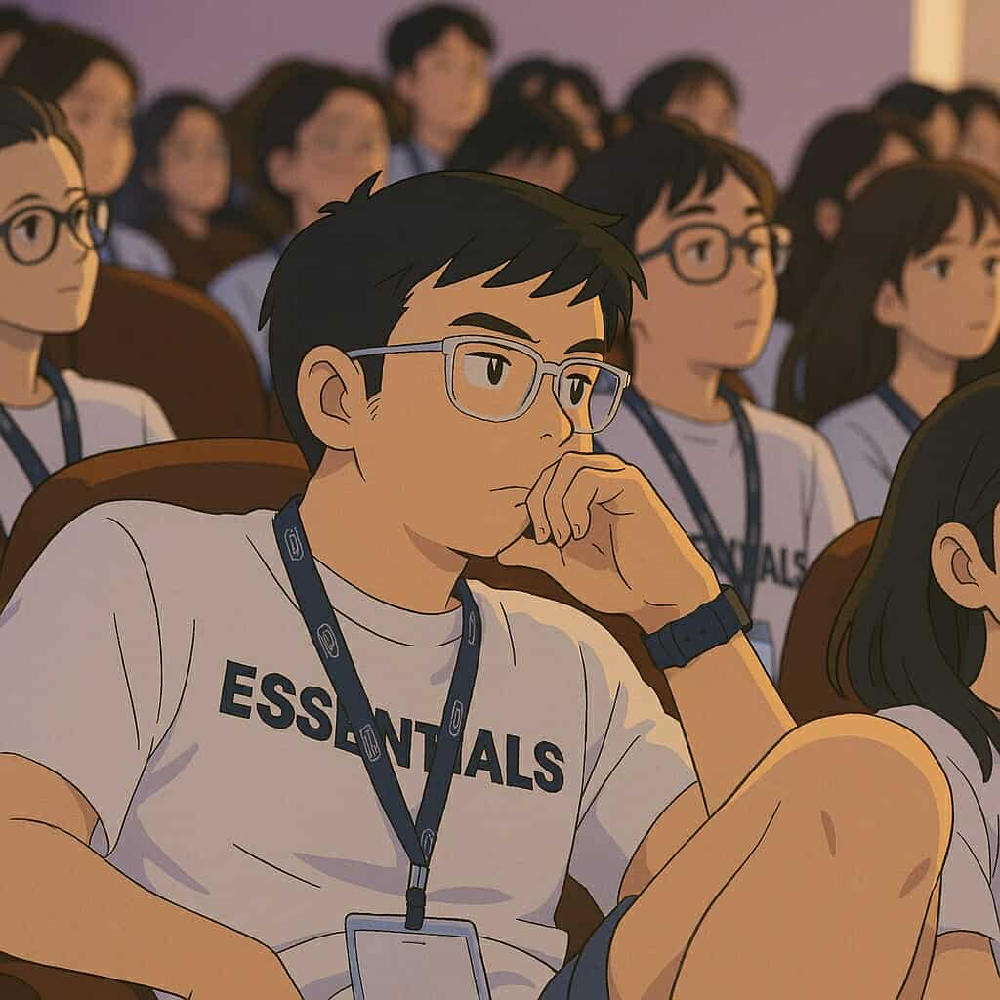

Oyunbat Batzorig
Project Manager | Industrial Engineer | Web Developer

PROFILE
Master’s student in Advanced Industrial Engineering at TH Rosenheim with hands-on experience in projectcoordination, digital media, and process optimization. Skilled in supporting business and engineeringoperations through data analysis, Python scripting, Web development and strategic planning. Passionateabout digital transformation, Industry 4.0, and sustainable logistics. Currently seeking part-time orworking student roles in engineering, project support, or digital innovation.
WORK EXPERIENCE
-
Digital Media Coordinator - Amnesty International Mongolia NGO
08/2023 - 09/2024 / Ulaanbaatar, Mongolia
- Reached 700,000+ people through strategic digital campaigns
- Created 200+ digital contents to promote human rights awareness
- Structured reports and presentations for campaign performance tracking
- Developed creative materials and visual designs
-
Project Manager - Education Zone Technology
04/2023 - 07/2024 / Ulaanbaatar, Mongolia
- Launched a new subscription-based product, gaining 2,000+ users in 2 months
- Managed product and business development to increase market reach
- Oversaw KPI reporting and project documentation
-
Youth, Digital Media, and Activism Coordinator - Amnesty International Mongolia NGO
10/2022 - 03/2023 / Ulaanbaatar, Mongolia
- Organized 10+ online/offline events to engage youth and promote activism
- Reached 1,500+ participants through advocacy and outreach initiatives
- Managed event planning, execution, and campaign coordination
EDUCATION
-
Master of Science in Advanced Industrial Engineering - Technische Hochschule Rosenheim
10/2024 - present / Rosenheim, Germany
Grade: 2.0
- Focus: 3D scanning, AI, Collaborative Robots, Digital Twin, IoT, Process Control, Six Sigma, Advanced Manufacturing Methods
-
Bachelor of Science in Industrial Engineering - German-Mongolian Institute for Resource and Technology
08/2016 - 07/2021 / Ulaanbaatar, Mongolia
Grade: 1.7
- Focus: Project Management, Process Optimization, Business Strategy
PROJECTS
-
Next Generation Brewery Logistics - Hofbräuhaus Traunstein
03/2025 - present / Traunstein, Germany
- Analyzing material flows and value stream mapping
- Modeling logistics scenarios (facility relocation, expansion)
- Identifying bottlenecks and proposing lean management solutions
- Aiming to create a sustainable logistics strategy
SKILLS
-
Technical & Software Skills:
Python (basic, data processing), Microsoft Office Suite, Figma, Canva, Miro, LRZ sync+, Web Development
-
Project, Process, Marketing Management:
Project reporting, KPI tracking, process optimization, team collaboration
-
Soft Skills
Communication, Time Management, Continuous Learning, Resilience
HOBBIES
-
Hiking
Enjoy exploring nature and staying active outdoors
-
Chess
Passionate about strategy and critical thinking
-
Multiplayer Computer Gaming (Dota 2)
Engage in strategic gameplay and quick decision-making
-
Basketball
Play regularly to stay active and have fun
LANGUAGES
-
English
Fluent
-
German
B1 (in progress)
-
Mongolian
Native
CERTIFICATES
-
Coursera: University of Michigan
-
Coursera: University of California, Irvine
-
Coursera: University of Michigan
OTHERS